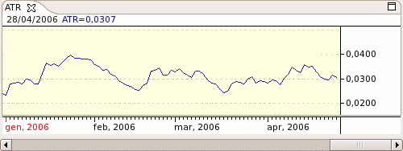

Average True Range or ATR is a measurement of volatility. It measures the average of true price ranges over time. The True Range is the greatest distance between today's high to today's low, yesterday's close to today's high, or yesterday's close to today's low. The Average True Range is a moving average of the True Ranges.

High ATR values often occur at market bottoms following a "panic" sell-off. Low Average True Range values are often found during extended sideways movement, like as those found at market tops or after consolidation periods. True Range is used in Welles Wilder's Directional Movement indicator as well as Donald Mart's Master Trading Formula and is a common volatility ratio. The ATR can be used in a channel breakout method of trading by adding or subtracting from the previous bar's close or the current bar's open.
Parameters